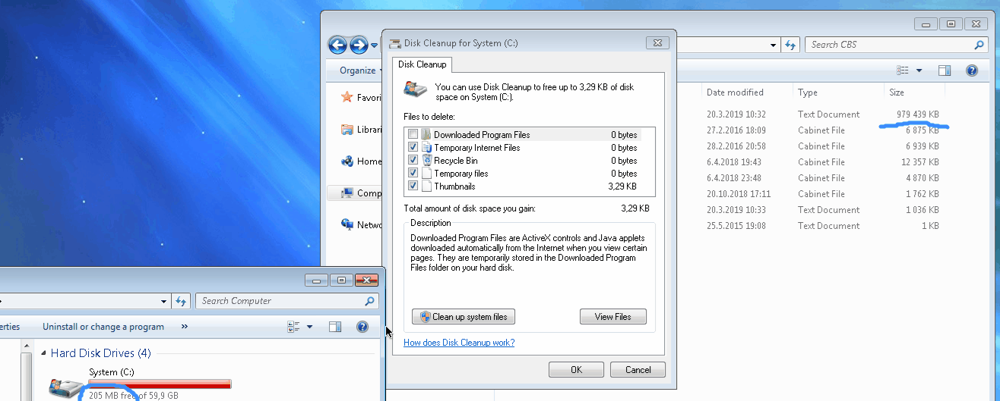
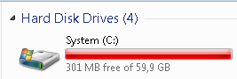
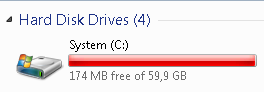
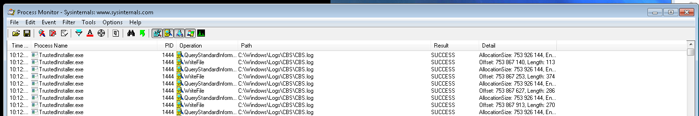

Windows Disk Cleanup throws you into deeper trouble
I’ve been quite vocal about my distaste for most things Microsoft before, and here comes another rant, so buckle up..
This morning, my old Win7 computer with a 64 GB C:\ drive was almost out of space. I had
like 60 MB left, so it wasn’t out just yet. So I went to fire up the Disk Cleanup tool.
Upon running it, I discovered that my drive filled up entirely - 0 bytes left. WTF, I wasn’t
doing anything else than running the Disk Cleanup??!
Turns out, running Disk Cleanup (with the “Clean up system files” option) for me actually wastes about 127 MB of drive space each time you run Disk Cleanup. I tried running it a couple times (each time manually deleting files from my download folder to get free space to try to run it again), and witnessed the same problem each time I ran it.
What’s worse is that the space it wastes cannot be freed with the very tool designed to free up space. So each time you run it, the deeper grave you dig for yourself!
You had one job: to free up disk space. You wasted 127 MB of space to tell me that you can free only 200 KB of space??!
Demo

Technical analysis
(this is from an earlier run than what the above .gif was made of)
Free space before:

And after:

=> Lost 127 MB of space
I fired up Process Monitor during the cleanup to see what’s happening.
During the “Windows Update Cleanup” phase the Disk Cleanup fires up TrustedInstaller.exe
which does a metric shit-ton of writes to C:\Windows\Logs\CBS.log (CBS =
Component-based servicing):

And the last entries:

If you take look at the offsets in the Detail column, first write offset is around 754
million bytes, and the last offset is 876 million bytes. Difference then is about 122 MB
which aligns well with the 127 MB of lost space I observed earlier.
Parting words
I don’t know (and I don’t care) what TrustedInstaller does to gauge what it can do to free up space, but the fact is that Disk Cleanup ultimately is responsible for all its downstream components for what they do as part of this process. If your job is to free up disk space - you shouldn’t do anything to waste even more space if that is the problem to begin with.
I grade this tool: (this video)
Each passing day I find myself agreeing more with this observation of @jessfraz
In my more naive days, I tried to keep my Windows installation in very well kept state, obsessing over each program installation location, stressing over Windows updates writing their directories to root directories of drives they shouldn’t write in, cleaning up registry etc etc.
Later I’ve realized that you can’t keep a Windows installation tidy - it’s built on shit, so the end result is going to be shit anyway. That’s why I’m building a project to minimize the state of each of my computer so each computer can easily be re-installed with ease, since the state I care about is kept elsewhere. Thanks for the inspiration, Microsoft.
Additional, related reading

Thanks for reading! 😍
If you like my writing, consider following me on Twitter.
Stay updated on my blog posts & projects - sign up for
my newsletter. 🚀
No spam, unsubscribe any time.
RSS also available.